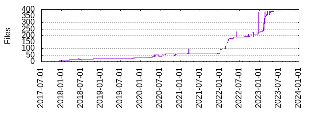

Files
- Total files
- 387
- Total lines
- 20470
- Average file size
- 1651.66 bytes

| Extension | Files (%) | Lines (%) | Lines/file |
|---|
| 105 (27.13%) | 1822 (8.90%) | 17 |
| bazel | 69 (17.83%) | 1250 (6.11%) | 18 |
| bzl | 52 (13.44%) | 6768 (33.06%) | 130 |
| bzlmod | 7 (1.81%) | 82 (0.40%) | 11 |
| c | 1 (0.26%) | 7 (0.03%) | 7 |
| cc | 6 (1.55%) | 39 (0.19%) | 6 |
| ci | 1 (0.26%) | 21 (0.10%) | 21 |
| common | 1 (0.26%) | 12 (0.06%) | 12 |
| go | 3 (0.78%) | 15 (0.07%) | 5 |
| java | 3 (0.78%) | 37 (0.18%) | 12 |
| js | 2 (0.52%) | 9 (0.04%) | 4 |
| json | 16 (4.13%) | 1156 (5.65%) | 72 |
| lock | 15 (3.88%) | 619 (3.02%) | 41 |
| md | 27 (6.98%) | 7038 (34.38%) | 260 |
| nix | 49 (12.66%) | 838 (4.09%) | 17 |
| patch | 3 (0.78%) | 88 (0.43%) | 29 |
| pkg | 1 (0.26%) | 0 (0.00%) | 0 |
| py | 4 (1.03%) | 37 (0.18%) | 9 |
| rs | 2 (0.52%) | 9 (0.04%) | 4 |
| sh | 8 (2.07%) | 135 (0.66%) | 16 |
| toml | 1 (0.26%) | 13 (0.06%) | 13 |
| tpl | 1 (0.26%) | 16 (0.08%) | 16 |
| vm | 5 (1.29%) | 187 (0.91%) | 37 |
| yaml | 1 (0.26%) | 139 (0.68%) | 139 |
| yml | 4 (1.03%) | 91 (0.44%) | 22 |